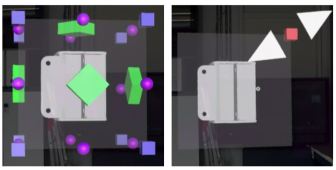

Eye vs. Head: Comparing Gaze Methods for Interaction in AR


Venue. ETRA (2020)
Abstract. Visualization in virtual 3D environments can provide a natural way for users to explore data. Often, arm and short head movements are required for interaction in augmented reality, which can be tiring and strenuous though. In an effort toward more user-friendly interaction, we developed a prototype that allows users to manipulate virtual objects using a combination of eye gaze and an external clicker device. Using this prototype, we performed a user study comparing four different input methods of which head gaze plus clicker was preferred by most participants.
Link to this page: